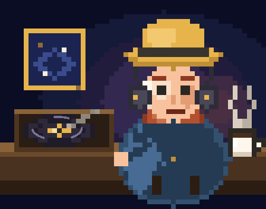

 oreja
de van gogh
oreja
de van gogh
macOS menu bar · 14.2+
Your AI talks.
Your music
waits its turn.
Oreja pauses Apple Music while ChatGPT speaks, or lowers it to the level you pick, then puts it back where you left it.
FreeGPL-3.0No accountRecords nothing